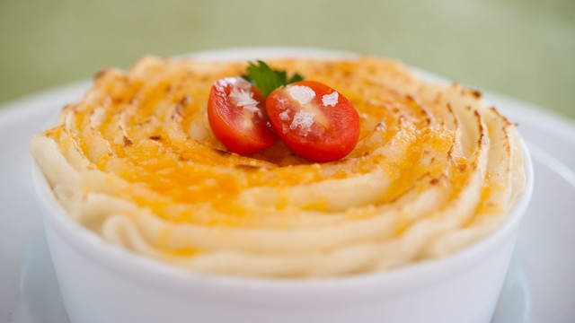

A Few Disney Recipes
Beignets at Disney's Port Orleans French Quarter Resort
(makes about 5 dozen)
Things you will need:
- 1 pack dry yeast
- 1/2 cup sugar
- 2 eggs
- 7 cups flour
- 1 1/2 cups warm water
- 1 tsp Salt
- 1 cup undiluted evaporated milk
- 1/4 cup soft shortening oil, for frying
- Confectioner's sugar
How to make:
- In a large bowl, sprinkle yeast over water, stir to dissolve.
- Add sugar, salt, eggs, and milk. Blend with rotary beater. Add the flour.
- Cover and chill overnight.
- Roll out on floured board to 1/8" thickness.
- Cut into 2 1/2" squares.
- Deep fry at 360 degrees 2-3 minutes or until lightly browned on both sides.
- Drain on paper towels.
- Sprinkle heavily with confectioner's sugar.
Back to top
Tonga Toast from Disney's Polynesian Village Resort
Things you will need:
- 2 or 4 slices sourdough bread, cut 1 to 1 1/2 inches thick
- 1 banana
- 1/3 cup sugar
- 1 teaspoon cinnamon
- 1 egg
- 1/4 cup milk
- 1/2 teaspoon vanilla
- oil or shortening for frying
- whipped butter and/or syrup
How to make:
- Cut a 1-inch pocket in one side of each bread slice.
- Cut banana in half crosswise, then split each piece lengthwise.
- Remove peel and stuff two pieces of fruit in each pocket of bread; set aside.
- Mix sugar and cinnamon; set aside.
- Mix together well the egg, milk and vanilla.
- Heat about 4 inches of oil in a pan to 350º F.
- Dip stuffed bread into egg/milk mixture and let it soak a few seconds to let penetrate bread.
- Fry bread on both sides in hot oil until lightly browned, about 3 minutes.
- Drain on paper towels or wire rack.
- Sprinkle with cinnamon sugar and serve.
Back to top
Cottage Pie inspired by the Rose and Crown at Epcot
(4 servings)

Things you will need:
- 1/4 cup butter
- 1 cup diced onion
- 1 1/2 pounds lean ground beef
- 2 cups mashed potatoes
- 1 cup brown gravy (homemade or instant)
- 1/4 teaspoon ground savory
- Salt and freshly ground pepper to taste
- Additional butter
How to make:
- Heat 1/4 cup butter in a 9-inch skillet.
- Add onion and cook until lightly browned, stirring consistently.
- Add beef, salt, pepper, and savory and continue cooking 5 minutes longer.
- Stir in gravy and heat until bubbling.
- Spoon into a buttered, 8-cup flat casserole dish.
- Top meat mixture with mashed potatoes.
- Dot with pieces of butter.
- Bake at 400°F for 15 to 20 minutes or until potatoes are lightly browned.
Back to top